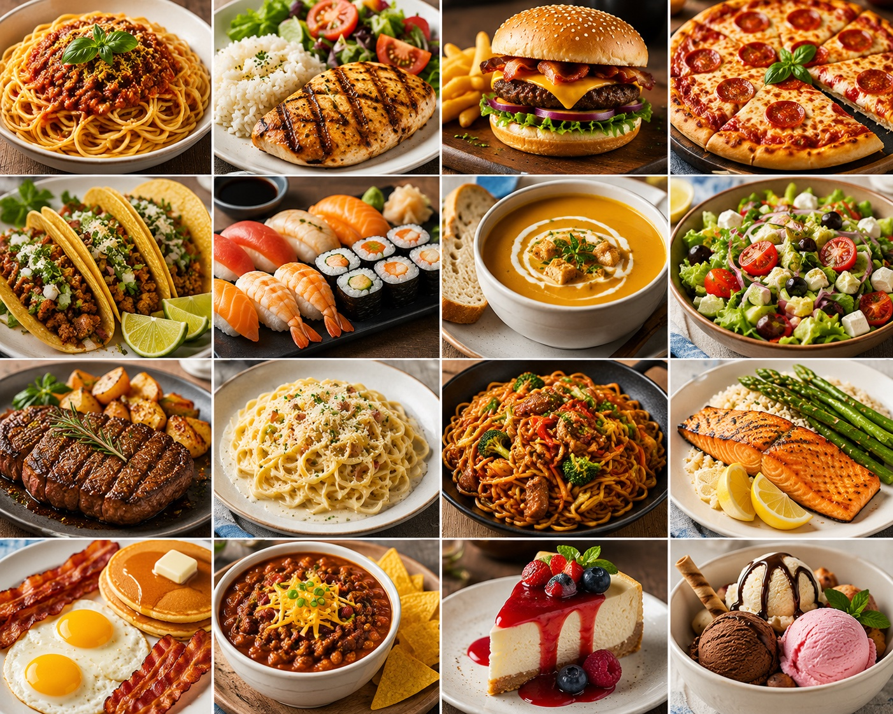
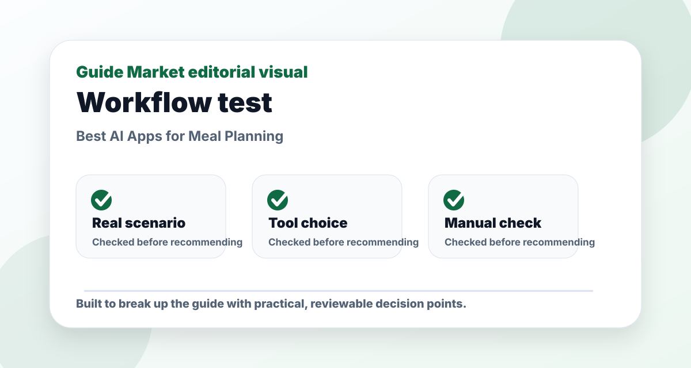
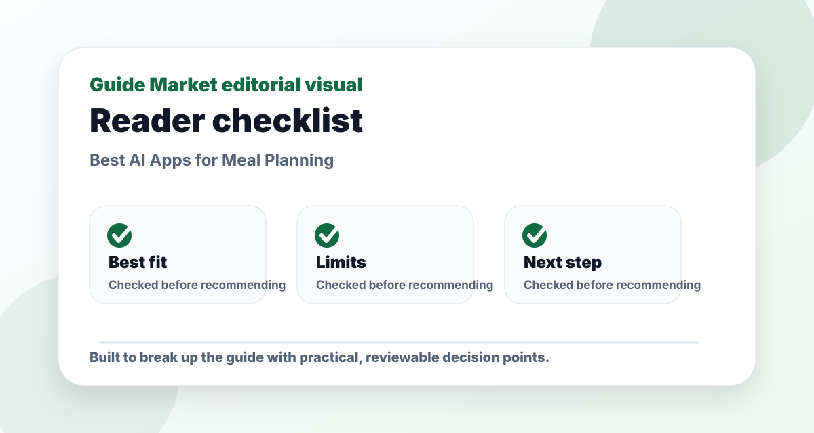
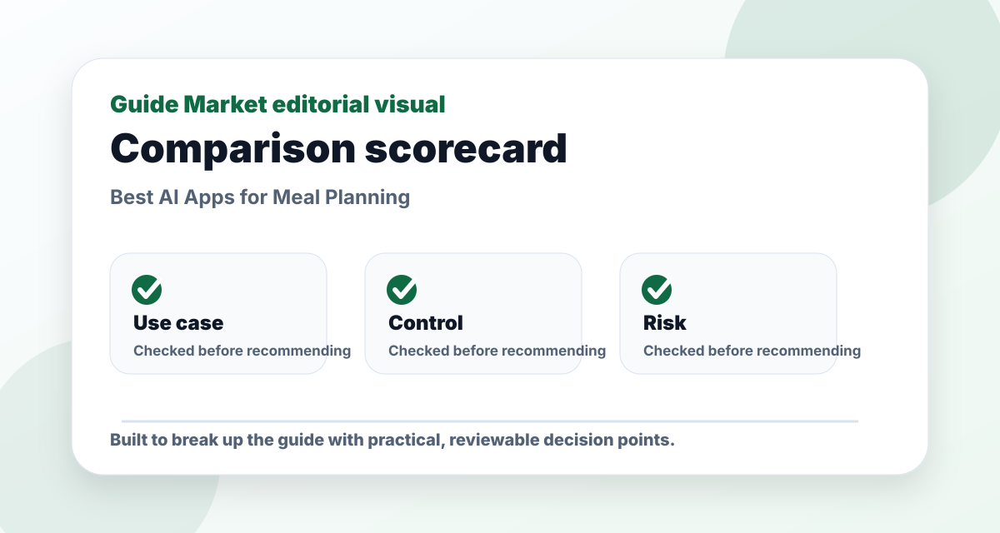

Best AI Apps for Meal Planning
Published May 12, 2026. Last updated May 24, 2026. Estimated reading time: 9 minutes.
Meal planning AI is useful when it removes friction: what to buy, what to cook twice, how to reuse ingredients, and how to avoid ordering food because you have no plan. The right app depends on whether you care most about calories, recipes, cost, or convenience.




The real problem this guide solves
This guide is not meant to be a quick list of names. The real problem is choosing meal planning tools that solve a real task instead of adding another unused subscription. That requires context: what the reader is trying to do, what can go wrong, and which option is useful after the first impressive demo.
I evaluate Eat This Much, Lifesum, ChatGPT, Yummly through a practical lens: how easy they are to start, how much control they give you, what must be verified manually, and whether they still make sense after the novelty fades. A recommendation only matters if it survives a realistic task.
Practical comparison criteria
| Criterion | What it reveals | How to test it |
|---|---|---|
| Use-case fit | Whether the option solves the actual job, not a generic version of it. | Test it with this scenario: a reader using meal planning tools on one realistic project and comparing the output side by side. |
| Control | Whether you can edit, verify, export, or adapt the result. | Try to change the output without starting from zero. |
| Reliability | Whether the recommendation remains useful when facts, prices, or constraints change. | Check the official source and compare with at least one alternative. |
| Long-term value | Whether the workflow will be used repeatedly. | Ask if it saves time next week, not only today. |
Pros and cons
Pros
- Gives a clearer starting point for a messy decision.
- Helps compare options using the same real-world scenario.
- Creates a repeatable workflow instead of a one-off answer.
Cons
- Still requires manual verification and judgment.
- Free plans or public information may be limited or outdated.
- Choosing too many options can create more work, not less.
Editorial verdict
My pick: Eat This Much if calories and automation matter, Yummly if recipe discovery matters, and ChatGPT if you want budget meal prep from ingredients you already have.
Quick picks
- Best automatic planner: Eat This Much
- Best nutrition tracking feel: Lifesum
- Best cheap meal ideas: ChatGPT
- Best recipe discovery: Yummly
Price and feature snapshot
| Tool | Price snapshot | Pros | Cons |
|---|---|---|---|
| Eat This Much Official site | Free account options; paid planner features available | Automatic meal plans around calories and diet style | Some recipes still need human taste adjustments |
| Lifesum Official site | Free app with paid Premium options | Nutrition tracking and diet structure | Not as flexible for pantry-based cooking |
| ChatGPT Official site | Free plan available; paid plans listed by OpenAI | Budget recipes, substitutions, grocery lists | Nutrition estimates need verification |
| Yummly Official site | Free recipe discovery; app features vary | Large recipe browsing and cooking ideas | Less focused on strict macro targets |
The pantry test
The most useful test is simple: can the tool build three meals from what you already own? ChatGPT is surprisingly good here if you list ingredients, budget, cooking tools, and disliked foods. Eat This Much is better when you want a calorie target without manually designing every meal.
Cheap and healthy is a workflow
For low-cost meal prep, ask for overlapping ingredients: rice, oats, eggs, beans, frozen vegetables, chicken, tofu, yogurt, or lentils. A good plan should reduce waste, not create a shopping list with twenty one-time ingredients.
Editorial recommendation
I would use ChatGPT for the first grocery plan and Eat This Much for calorie structure. Lifesum is better if tracking habits motivates you. Yummly is best when you are bored and need better recipe ideas.
Best use cases
- Five lunches under a fixed grocery budget
- High-protein meal prep for gym goals
- Vegetarian recipes from pantry ingredients
- Family dinners where leftovers become lunch
FAQs
What is the best option for beginners?
The best beginner option is usually the one that solves one clear task with the least setup. Start with a free or simple workflow before paying.
Are paid plans worth it?
Only when the paid feature removes a real limit such as exports, collaboration, higher usage, integrations, or better control.
Can these tools replace human review?
No. They can speed up drafting and comparison, but important facts, public content, schoolwork, business decisions, and financial details still need review.
How do I avoid generic results?
Use a specific brief with goal, audience, constraints, examples, and the format you want. Then ask the tool to revise against clear criteria.
Hands-on testing notes
For this topic, I would not judge Eat This Much, Lifesum, ChatGPT, Yummly from the homepage alone. Marketing pages are designed to make everything look easy. A fair test uses one task, one deadline, and one output format. In practice, that means giving every tool the same brief and judging the amount of useful work left after the first result.
In testing, I care less about the longest feature list and more about whether the workflow stays editable after the first draft. If setup takes longer than the task itself, the tool is probably wrong for a beginner. If the output is polished but hard to edit, it may create hidden friction. If the tool saves time but weakens quality, it is not a real productivity gain.
I would also test what happens when the first answer is not good enough. Can the tool revise? Can it explain why it made a choice? Can you export the result? Can you collaborate with someone else? These practical details matter more than a dramatic demo.
How to combine the tools
A strong workflow usually has three parts: one tool for creation, one for review, and one for organization. For example, use the fastest option to generate a draft, a more careful option to critique it, and your normal workspace to save the final version. This keeps AI useful without letting it take over the whole process.
For Best AI Apps for Meal Planning, my default stack is one primary tool for the core task, one secondary tool for review, and a simple checklist for verification. Start small, test the result, then add complexity only when the simple workflow hits a real limit.
Common mistakes
- Using a vague prompt and blaming the tool for a vague result.
- Subscribing before testing the free workflow on a real task.
- Ignoring privacy or uploading information that should stay private.
- Keeping a tool because it feels impressive, even when it does not improve the final result.
- Skipping manual review when facts, claims, or public-facing content matter.
Final recommendation
My practical recommendation is to choose the simplest tool that solves the main problem, then build a repeatable checklist around it. The reader should finish with a usable process, not just a list of apps. If the tool makes the task easier to start, easier to finish, and easier to review, it has earned its place.
What I would test in a real kitchen
The best meal-planning app is the one that survives a normal week. I would test each option with a realistic constraint: a fixed grocery budget, two proteins, one vegetarian dinner, one night with no cooking energy, and leftovers that must become lunch. This immediately exposes whether the app understands real life or only produces pretty recipes.
For example, a useful plan should reuse ingredients intelligently. If Monday uses rice, Tuesday can use rice bowls. If you buy Greek yogurt for breakfast, it can also become a sauce base. If a recipe asks for one expensive spice used nowhere else, the plan is probably not budget-friendly. AI meal planning should reduce waste, not create a shopping list that looks like a restaurant inventory.
I also check whether the app respects dislikes and cooking tools. A student with one pan, a microwave, and no blender needs different recipes than a family with an oven and a full pantry. This is where ChatGPT can be surprisingly practical because you can describe the kitchen honestly. Eat This Much is stronger when the main constraint is calories or macros, but it may still need taste adjustments.
When I would not use an AI meal planner
I would not rely on an AI meal planner for medical nutrition, allergies, or clinical diet needs without professional guidance. Nutrition estimates can be wrong, portion sizes vary, and ingredient databases are imperfect. For everyday meal prep, that may be acceptable. For health conditions, it is not enough.
I would also avoid any plan that feels too strict. A meal plan should make the week easier, not turn food into a rulebook. The best version leaves room for one flexible meal, simple snacks, and substitutions. If the plan collapses because one ingredient is missing, it is too fragile.
Editorial bottom line
The point of this guide is not to collect more tools. It is to leave with a decision that can be tested in real life. Before choosing, run one small project, compare the result with your current workflow, and ask whether the tool improved quality, saved time, or reduced confusion. If it did none of those things, it is not the right recommendation yet.
I would also keep a short note after testing: what worked, what failed, what needed manual checking, and whether I would use it again next week. That small habit turns a casual recommendation into a practical decision. It also protects you from keeping software only because it looked impressive during the first session.